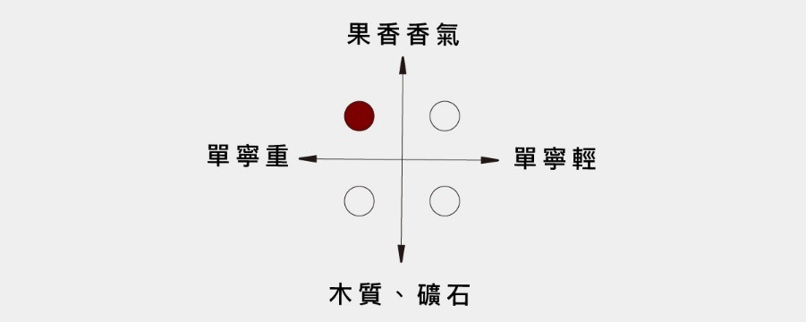

WA 91 分殊榮
屢屢躍上國際舞台 Chianti 經典之作
【風味】

【酒評介紹 - Wine Advocates】
WA 的團隊由 Robert Parker 領軍，並採用和 Parker 相同的評分標準。每款酒都能得到 50 分的基本分。其它 50分 由以下 4 個要素組成：
（1）顏色和外觀：5分。
（2）香氣：15分。這方面主要考察香氣的濃郁程度、純正性以及複雜度。
（3）風味和餘韻：20分。這方面主要考察葡萄酒風味的濃郁度、層次以及餘韻的長短。
（4）綜合評價及陳年潛力：10分。這方面考察的內容包括葡萄酒的整體品質，發展和熟成潛力。
【酒評介紹 - Wine Spectator】
美國 Wine Spectator 雜誌，是目前全球發行量最大的葡萄酒刊物，每年會對約 1.5 萬款葡萄酒進行評分。WS 評分系統同樣是 100 分制，90 ~ 94 分屬於卓越出眾，極具個性與風格的酒款，95 ~ 100 分則是不容錯過的經典之作。